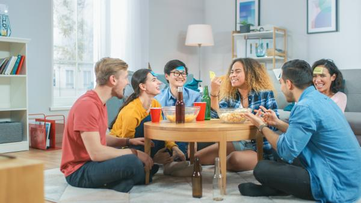
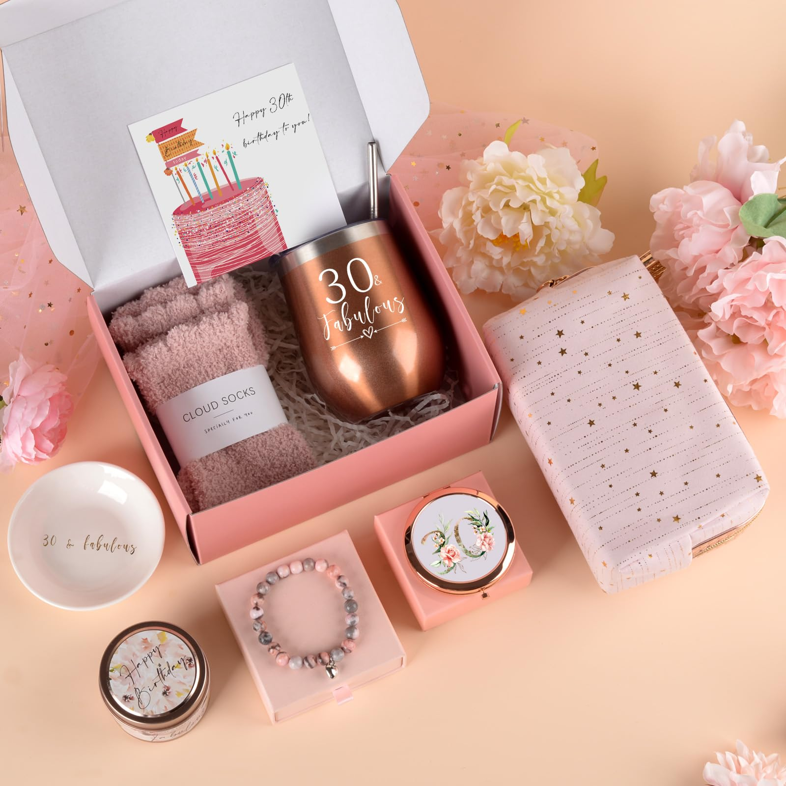
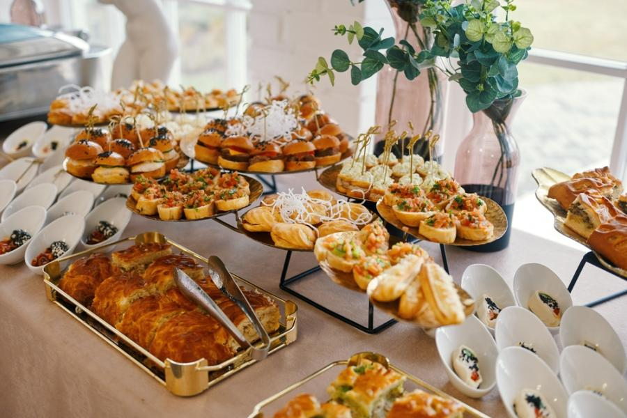
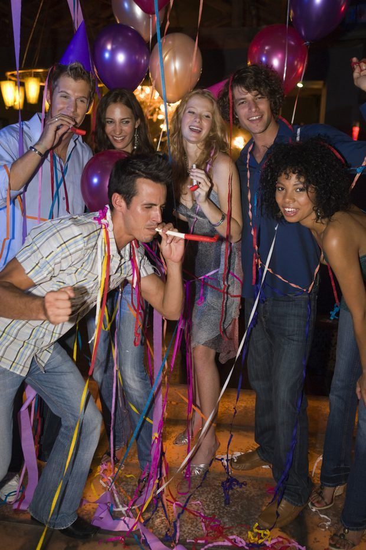

Venham celebrar meu aniversário comigo! Vai ser uma festa incrível! começa em
Quem disse que brincadeiras são só para crianças? Em aniversários de adultos, dinâmicas como jogos de adivinhação, karaokê e desafios divertidos garantem boas risadas e momentos inesquecíveis. Além disso, brincadeiras nostálgicas podem trazer de volta a leveza da infância, tornando a festa ainda mais especial.

Na véspera do aniversário, vem aquela sensação de estar prestes a celebrar mais um ciclo. É um momento de reflexão sobre o ano que passou e de empolgação pelo que está por vir. E quando os convidados gritam "surpresa!" ou chega a hora de apagar as velas, o coração bate ainda mais forte.

Comida boa é essencial para um aniversário de adulto inesquecível! Desde petiscos sofisticados até aquele bolo especial que desperta nostalgia, o cardápio faz toda a diferença. Uma mesa bem servida não só agrada os convidados, mas também transforma a celebração em uma experiência deliciosa e memorável.

O aniversário de um adulto é uma ótima oportunidade para celebrar a vida ao lado de amigos e familiares. Seja um jantar sofisticado, um churrasco descontraído ou uma festa temática, o importante é reunir pessoas queridas para brindar mais um ano de histórias, conquistas e novos planos.
